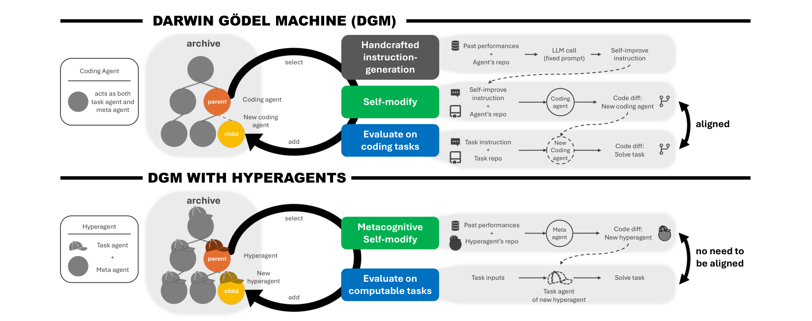
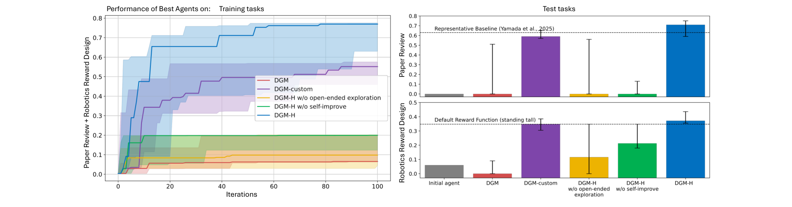
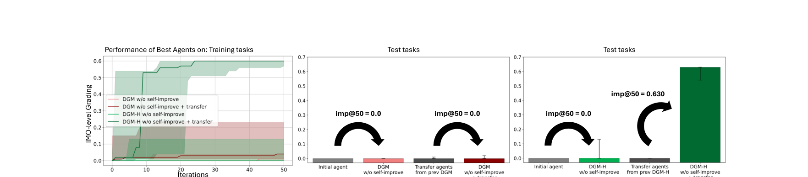
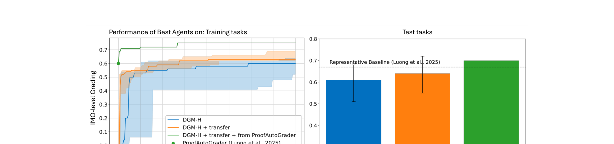

Meta 연구진이 하이퍼에이전트(HyperAgents)를 발표했습니다. 자기 개선 방법 자체를 개선하는 AI입니다.
코딩, 논문 심사, 로봇 제어, 수학 채점 4개 영역에서 기존 시스템보다 높은 성능을 달성했습니다.
한 영역에서 학습한 자기개선 전략이 전혀 다른 영역으로 전이되고, 반복할수록 성능이 누적됩니다.
AI가 코드를 고치더니, 이제 자기 자신을 고치는 법까지 고친다.
당신의 AI 전략은 아직 사람이 일일이 튜닝하고 있는가?
AI 에이전트를 도입한 기업에 공통된 고민이 있습니다. 성능을 높이려면 사람이 직접 손대야 합니다. 프롬프트를 바꾸고, 파이프라인을 고치고, 도메인마다 새로 설계합니다. Meta 연구진이 이 병목을 풀었습니다. AI가 스스로 성능을 올리고, 성능을 올리는 방법 자체도 개선합니다.
기존 자기개선 AI인 DGM(Darwin Gödel Machine)은 코딩에서만 통했습니다. DGM은 AI가 자기 코드를 직접 고치는 방식입니다. 코딩을 잘하면 자기 수정도 잘합니다. 그런데 논문 심사나 로봇 제어는 다릅니다. 논문 심사 실력이 높다고 코드를 잘 고치는 건 아닙니다.
하이퍼에이전트는 이 한계를 없앴습니다. 개선 방식 자체를 바꿀 수 있게 만들었습니다. 코딩이든 로봇이든 영역에 상관없이 스스로 발전합니다.
첫째, 일하는 AI와 고치는 AI를 하나로 합쳤습니다. 작업 에이전트(task agent)가 과제를 풉니다. 메타 에이전트(meta agent)가 작업 에이전트를 고칩니다. 여기서 핵심이 있습니다. 메타 에이전트도 수정 대상입니다.
기존 시스템은 개선 절차가 고정이었습니다. 사람이 짠 개선 로직을 그대로 반복했습니다. 하이퍼에이전트는 개선 절차 자체를 진화시킵니다.

Figure 1. (위) 기존 DGM: 코딩 에이전트가 작업과 자기수정을 모두 담당합니다. 자기개선 절차는 고정입니다. (아래) DGM-H: 작업 에이전트와 메타 에이전트를 분리하되 하나의 수정 가능한 프로그램으로 통합합니다. 출처: Zhang et al. (2026)
둘째, 4개 영역에서 성능이 올랐습니다. 코딩(Polyglot) 테스트 점수가 0.084에서 0.267로 상승했습니다. 논문 심사는 0.0에서 0.710까지 올랐습니다. 기존 최고 기준인 AI-Scientist-v2(0.630)를 넘겼습니다.
로봇 보상 설계도 0.060에서 0.372로 올랐습니다. 기본 보상 함수(0.348)보다 높은 수치입니다.

Figure 2. (왼쪽) 반복 횟수별 성능 추이. DGM-H(파란색)가 다른 베이스라인 대비 지속적으로 상승합니다. (오른쪽) 테스트 성능 비교. 출처: Zhang et al. (2026)
| 평가 영역 | 초기 성능 | DGM-H 성능 | 기준선 |
|---|---|---|---|
| 코딩 (Polyglot 테스트) | 0.084 | 0.267 | DGM 0.307 |
| 논문 심사 (테스트) | 0.0 | 0.710 | AI-Sci-v2 0.630 |
| 로봇 보상 설계 (테스트) | 0.060 | 0.372 | 기본 보상 0.348 |
| 수학 채점 (IMO, 전이) | 0.0 | 0.640 | ProofAutoGrader 0.670 |
출처: Zhang et al. (2026), arXiv:2603.19461, Table/Figure 2-4. 5회 실행 중앙값 기준.
셋째, 한 영역에서 배운 개선법이 다른 영역에서도 통합니다. 연구진은 논문 심사와 로봇 제어에서 훈련한 하이퍼에이전트를 수학 채점에 넣었습니다. 50회 반복 후 개선 지표(imp@50)가 0.630이었습니다(Zhang et al., 2026). 초기 에이전트와 기존 DGM 전이 에이전트는 모두 0.0이었습니다. 하이퍼에이전트만 다른 영역에서도 성능을 올렸습니다.

Figure 3. (왼쪽) 수학 채점 영역 성능 추이. DGM-H 전이 에이전트(보라색)만 유의미한 향상을 보입니다. (가운데·오른쪽) imp@50 지표. 하이퍼에이전트 전이만 0.630을 달성합니다. 출처: Zhang et al. (2026)
| 전이 조건 | imp@50 | 의미 |
|---|---|---|
| 초기 에이전트 (DGM) | 0.0 | 개선 능력 없음 |
| 초기 에이전트 (DGM-H) | 0.0 | 개선 능력 없음 |
| DGM-custom 전이 | 0.0 | 도메인 종속, 전이 실패 |
| DGM-H 전이 (하이퍼에이전트) | 0.630 | 범용 자기개선 전략 전이 성공 |
출처: Zhang et al. (2026), Figure 3. 수학 채점(IMO-GradingBench) 영역 기준, 5회 실행 중앙값.
넷째, 반복할수록 성능이 쌓입니다. 전이된 하이퍼에이전트로 수학 채점을 200회 돌렸습니다. 테스트 점수는 0.640입니다(Zhang et al., 2026). 처음부터 시작하면 0.610에 그칩니다.
기존 최고 모델인 ProofAutoGrader(0.670)에 전이 메타 에이전트를 붙이면 0.700까지 올랐습니다. 전체 벤치마크 정확도도 0.561에서 0.601로 높아졌습니다.

Figure 4. (왼쪽) 전이 에이전트에서 시작한 DGM-H(보라색)가 초기 에이전트에서 시작한 경우보다 빠르게 성능이 향상됩니다. (오른쪽) ProofAutoGrader + 전이 조합이 가장 높은 테스트 성능을 달성합니다. 출처: Zhang et al. (2026)
다섯째, AI가 스스로 도구를 만들었습니다. 하이퍼에이전트는 성능 추적기(PerformanceTracker)를 자동으로 개발했습니다. 세대별 점수를 기록하고, 어떤 변경이 효과가 있었는지 분석합니다.
영구 메모리(persistent memory)도 직접 만들었습니다. 과거의 성공과 실패를 저장하고, 다음 세대에 반영합니다. 이 도구들 덕분에 다른 영역에서도 바로 성능을 올릴 수 있었습니다.
하이퍼에이전트가 가장 먼저 만든 도구가 성능 추적기입니다. 우리 에이전트에도 같은 원리를 적용합니다. 입출력 품질을 주 단위로 기록합니다. Claude에 "이 에이전트의 4주 성능 로그에서 개선 패턴을 찾아줘"라고 요청합니다. (1시간, 성능 대시보드 설계)
프롬프트 끝에 한 줄을 추가합니다. "결과를 평가하고 개선점을 제안하라." 에이전트가 자기 출력을 스스로 검토합니다. 간단한 피드백 루프(자기검토 순환)가 만들어집니다. (30분, 프롬프트 수정)
고객 응대 에이전트에서 잘 먹힌 프롬프트 구조가 있습니다. 이걸 내부 문서 분석 에이전트에 그대로 적용합니다. 이 논문의 핵심 발견이 바로 이것입니다. 좋은 개선 전략은 영역을 가리지 않습니다. (2시간, A/B 테스트 설계)
안전 통제가 가장 큰 과제입니다. 연구진도 이 점을 인정합니다. 자기수정 AI는 사람보다 빠르게 진화할 수 있습니다. 이번 실험은 모두 샌드박스(격리 환경)에서 진행했습니다. 컴퓨팅 자원 제한, 인터넷 차단, 사람의 감독이 전제입니다.
코딩에서는 기존 DGM이 더 높습니다. DGM-H의 코딩 점수(0.267)는 기존 DGM(0.307)보다 낮습니다. DGM이 코딩 전용으로 설계됐기 때문입니다. 하이퍼에이전트의 강점은 여러 영역에서 두루 통한다는 것입니다.
실험실과 현장은 다릅니다. 논문의 과제에는 정답이 있습니다. 기업 현장의 과제는 정답 기준 자체가 불분명합니다. 잘못된 기준을 최적화하면 오히려 역효과가 납니다.
비용 정보가 부족합니다. 100~200회 반복에 드는 연산 비용을 논문이 밝히지 않습니다. 부록에 추정치가 있지만 구체 수치는 비공개입니다. 기업이 도입하려면 비용 대비 효과를 먼저 따져야 합니다.
AI가 스스로 진화하는 시대가 시작됐습니다. 하이퍼에이전트는 개선법까지 개선하는 AI의 첫 사례입니다.
우리 회사 AI 에이전트의 자기개선 체계가 궁금하다면, 무료 진단을 신청하세요.
- Zhang, J., Zhao, B., Yang, W., Foerster, J., Clune, J., Jiang, M., Devlin, S., & Shavrina, T. (2026, 3월). HyperAgents [Article]. arXiv. https://arxiv.org/abs/2603.19461
- Facebook Research. (2026). HyperAgents: Self-referential self-improving agents [Code Repository]. GitHub. https://github.com/facebookresearch/Hyperagents